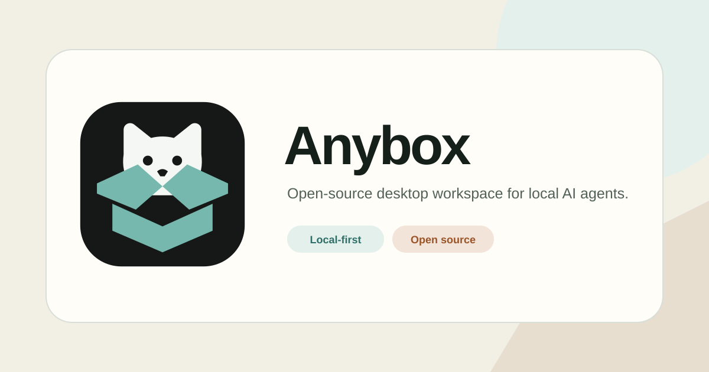

Folded Companion
Anybox 的优化标志：保留“猫从开放纸箱中出现”的原始记忆，改为真正的原生 SVG，并针对桌面、移动端、网站导航与 favicon 做了尺寸收敛。
标志与 App 图标
真实小尺寸
色彩
Ink · #15201B
Teal · #2F6F68
Night · #151817
Night Teal · #76B8AD
Warm Paper · #F2EFE5
社交预览

Anybox 的优化标志：保留“猫从开放纸箱中出现”的原始记忆，改为真正的原生 SVG，并针对桌面、移动端、网站导航与 favicon 做了尺寸收敛。
Ink · #15201B
Teal · #2F6F68
Night · #151817
Night Teal · #76B8AD
Warm Paper · #F2EFE5
